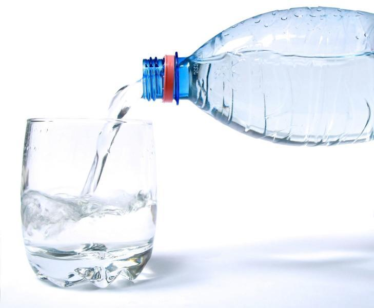

Kezdőlap - Wikipédia, Fogyasztás
Wikipédia percek
Az ásványvíz az ivóvízzel azonos beszerzési helyről, védett kútból vagy forrásból származik. A vizek döntő többsége szénsav mentes, melyet a palackozás előtt dúsítanak. A hazai vezetékes ivóvizek fele, és a természetes források többsége is ásványvíznek minősülnek.
Az ásványvízforrások mellett - azok gyógyhatásának köszönhetően - gyakran nőttek ki fürdők, üdülőhelyek. Magyarország a világ egyik ásványvízforrásokkal és felszínre hozható ásványvízvagyonnal leginkább megáldott része. Jelenleg az ivóvíz szolgáltatók létesítményeit figyelmen kívül hagyva több mint száz, kifejezetten a palackozás céljából létesített artézi kút és forrás ad elismert természetes ásványvizet és ezek közül mintegy 50-nek a vizét palackozzák is.
Mesterségesen is állítanak elő ásványi és egyéb anyagokkal dúsított vizet, ezek azonban nem tekinthetők természetes ásványvíznek.
Éves fogyasztás
| Kontinens | Ország | Mennyiség (milliárd gallon) |
|---|---|---|
| Európa | Németország | 3.11 |
| Franciaország | 2.41 | |
| Olaszországk | 3.17 | |
| Amerika | Brazília | 4.8 |
| Mexico | 8.23 |